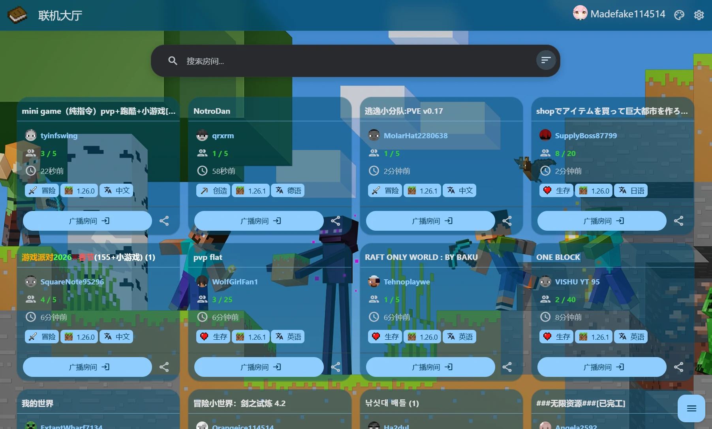
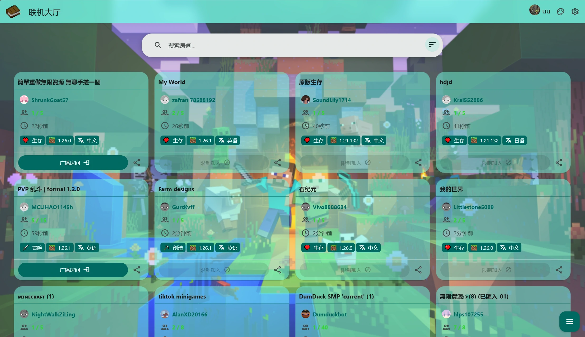
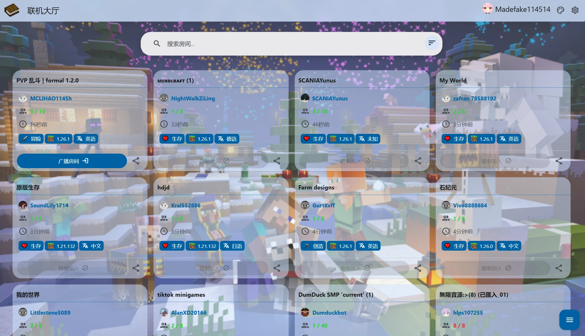

在线配色方案
在线配色方案
这是一些由官方或其他人上传的配色方案，您可以直接下载并应用 (手机app请手动下载并应用)
声明：背景素材取材网络，请合理使用以避免法律风险
投稿: wzy@qqaq.top (邮箱) | 2377659724 (QQ)
名称: Minecraft 15th
作者: 官方
描述: Minecraft 15 周年主题
预览: (单击放大)

名称: Minecraft 1
作者: 官方
描述: Minecraft PC 壁纸包
预览: (单击放大)

名称: Minecraft Winter
作者: 官方
描述: Minecraft 冬季主题壁纸与配色
预览: (单击放大)
